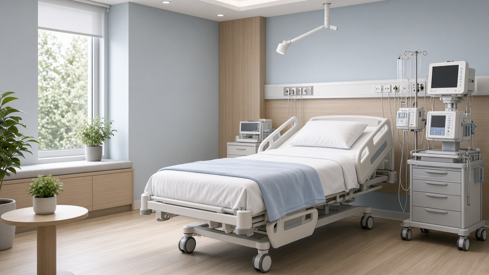

Анонимно
Обращение без уведомлений третьим лицам. Можно начать с псевдонима.

Синтетика и опиоиды ведут себя по-разному. «Соли» и мефедрон часто приходят с бессонницей и паранойей. Героин и метадон — с тяжёлой абстиненцией. Спайс — с непредсказуемой психикой. Мы не лечим «наркоманию вообще»: сначала вещество, потом протокол.
УБОД не предлагаем как аттракцион. Если анестезиолог не допускает — идём медленным детоксом. Кодирование от наркозависимости — отдельное решение после стабилизации.
Ломка, срыв или план детокса — врач подскажет безопасный следующий шаг, 18+.
Обращение без уведомлений третьим лицам. Можно начать с псевдонима.
Дежурный специалист на связи — дом или стационар по показаниям.
Выезд, приём или палата. Формат — после оценки состояния.
Объясняем родственникам следующий шаг без давления.
Страница «Наркомания без общих палат и без морали» — часть маршрута Альбы: добровольно, 18+, без обещаний «навсегда». Ниже — как проходит помощь при наркотической зависимости, когда звонить, чем отличается выезд vs палата под наблюдением, какие есть ограничения и что делать после.
Мы говорим спокойно: сначала безопасность и согласие, затем метод и срок. Стоимость ориентировочная — точный объём врач называет после осмотра.
Имеет смысл звонить, если ломка, срыв, отказ от еды и сна, риск осложнений без наблюдения. Страница «Наркомания без общих палат и без морали» — точка входа: можно начать с вопроса, не с «готовности лечиться навсегда».

Врач уточняет жалобы, срок проблемы, сопутствующие болезни и согласие. Для помощь при наркотической зависимости это основа: без осмотра не выбираем метод «из рекламы».
Дальше — амбулаторный приём, выезд или палата. Объём зависит от безопасности, а не от желания «уложиться в час».
Фиксируем, что делать при ухудшении, куда звонить и какие шаги разумны через несколько дней.

Разница выезд vs палата под наблюдением решается по показаниям. Домашний и амбулаторный формат уместны при контакте и стабильности. Стационар — когда нужен пост, монитор или изоляция от триггеров.

Имеются противопоказания. Часть процедур нельзя начинать при остром опьянении, отказе от осмотра, тяжёлой соматике или без согласия пациента. Точные ограничения врач называет на консультации.
Сохраняйте контакт дежурного. Если вернулись симптомы, тяга или конфликт дома — лучше позвонить рано. Следующим шагом могут быть детокс, кодирование, психотерапия или семейная встреча — по готовности человека.
Ориентиры до осмотра. Точный объём и ограничения — после консультации врача. 18+, добровольно.
Дежурный уточняет состояние и срочность.
Дом, приём или палата — по показаниям.
Врач оценивает риски до процедур.
Начинаем согласованный объём программы.
Смотрим ответ на лечение и самочувствие.
Рекомендации на ближайшие дни и связь 24/7.


Коротко опишите ситуацию — подскажем, подходит ли программа и что подготовить.
Первые сутки — монитор, не уговоры.
ОстроТолько после допуска анестезиолога.
ДальшеНе вместо реабилитации.
ОпиоидАбстиненция и долгий выход.
ОпиоидОтмена только под врачом.
СинтетикаСон, сердце, психика.
СинтетикаПаранойя и истощение.
СинтетикаНепредсказуемый психоз.
СтимуляторСердце и «ещё одна линия».
СтимуляторБессонница и срыв после ямы.
КаннабисКогда «травка» уже не отпускает.
ИноеПары, бытовая химия, отдельный риск.
ИноеСон, дыхание, падения.
ИноеДавление и ритм сердца.
Ответы по теме «Наркомания без общих палат и без морали». Если остались сомнения — позвоните дежурному.
Состав зависит от состояния: осмотр, план помощи, медикаментозная поддержка по показаниям и понятный следующий шаг. Точный объём для «Наркомания без общих палат и без морали» врач называет после консультации.
На сайте указана ориентировочная стоимость. Итоговая цена зависит от формата (дом, приём, стационар), длительности и объёма процедур — после оценки состояния.
Да. Обращение добровольное, 18+. Можно начать с псевдонима. Без постановки на диспансерный учёт в частном формате.
Да, при показаниях организуем выезд. Если безопаснее стационар — скажем прямо и поможем с маршрутом.
Дежурная линия 24/7. Срочные форматы доступны ночью и в выходные; плановые приёмы — по записи.
Нет. Можно позвонить или оставить заявку. Для части процедур нужен осмотр и согласие пациента.
Документ, список лекарств, контакты близких по желанию. Подробный чек-лист подскажет администратор.
Да. Родственников подключаем только с согласия пациента, кроме ситуаций угрозы жизни.
Да. Имеются противопоказания. Часть методов нельзя начинать при остром опьянении, тяжёлой соматике или без согласия.
Нет, это частная медицинская помощь. При угрозе жизни вызывайте 103.
Детокс — стабилизация острого состояния. Программа «{t}» может включать детокс, но фокус — на маршруте помощи под задачу страницы.
От нескольких часов (выезд/капельница) до недель в стационаре/реабилитации. Срок подбирают после осмотра.
Условия оплаты уточняйте у администратора. Иногда доступна поэтапная оплата по этапам помощи.
При необходимости — медицинские документы по факту оказанной помощи. Условия сообщим на консультации.
Амбулаторный формат часто совместим. При стационаре нужен перерыв — врач оценит риски.
Без ультиматумов и ярлыков. Дежурный подскажет, как говорить спокойно и какой формат возможен добровольно.
Маршрут индивидуальный. При необходимости учитываем особенности и запрос семьи.
План наблюдения, контакты дежурного, рекомендации по срыву и поддержке. Следующий шаг — по готовности человека.
Для части запросов — да, как первый ориентир. Острый риск и процедуры требуют очного осмотра.
Обычно в ближайшие минуты в рабочем контуре дежурного. Оставьте номер — перезвоним сами.
Дежурный врач на связи 24/7. Можно не называть имя.
Оставьте номер — врач перезвонит в течение 10 минут. Имя можно не указывать.